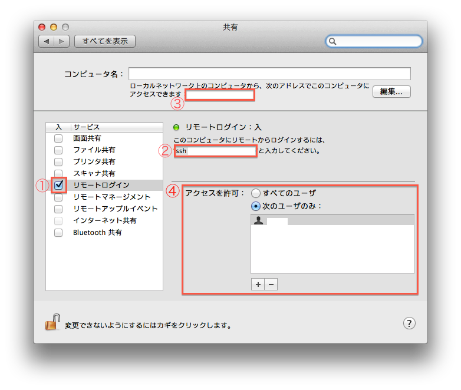

ssh サーバー
OS X Mountain Lion でセキュアな ssh サーバーを立ち上げます。
セキュアな ssh サーバーにするにはターミナルの知識が必要です。
ssh クライアント ( ssh サーバーに接続するコンピューター ) は
Mac でターミナルを用いた場合を想定しています。
もちろん、Unix、Linux の CLI からでも、
Windows では PuTTY 等の ssh クライアントからでも構いません。
ssh サーバーの構築
「システム環境設定」の「共有」を選択します。

スクリーンショットの 1 のように「リモートログイン」を「入」にします。
これで Mac が ssh サーバーとして立ち上がります。
スクリーンショットの 2 は白抜きになっていますが、実際は user@hostname
( ここでの hostname は 192.168.0.1 ) となっています。
実際に LAN 上の別の Mac のターミナルで
$ ssh user@hostname
と打ち込むとパスワードを要求されますが、ログインするユーザーのパスワードを打ち込んでください。
その際に打ち込んだパスワードが表示されません
( *** のような表記はでません ) が入力は出来ています。
これで ssh サーバーの立ち上がった Mac に接続できます。
hostname の部分はスクリーンショットの 3 の白抜き
( hoge.local ) でも良いです。
セキュアなsshサーバー
ssh サーバーを WAN に公開しないのであれば、
アクセスできるユーザーを限定する程度で良いと思います。
ただ公開鍵認証を用いるとセキュリティも向上し、
ターミナルでの接続はパスワードの入力を省略出来ます。
アクセスできるユーザーの限定
ssh でアクセス可能なユーザーを限定します。
スクリーンショットの 4 のように「アクセスを許可」の「次のユーザのみ」を選択します。
そのあと「＋」を選択して、 ssh でアクセスしたいユーザを選択します。
公開鍵認証手続き
ssh クライアント側 ( ssh サーバーにアクセスする側 ) のターミナルで
$ cd ~/.ssh
$ ssh-keygen -t rsa 全て Eneter で構いません。
$ scp id_rsa.pub username@hostname:/Users/username/.ssh
$ ssh user@hostname
$ cd ~/.ssh
$ cat id_rsa.pub >> authorized_keys
$ chmod 600 authorized_keys
これで公開鍵認証が出来るようになりました。
ssh クライアント側のターミナルから
$ ssh user@hostname
パスワードを要求されずに ssh 接続が出来るようになったかと思います。
ssh サーバーの設定を変更
OS X でのポート変更は/System/Library/LaunchDaemons/ssh.plistの編集によって行う。
$ vi /System/Library/LaunchDaemon/ssh.plist
〈 key 〉 Listeners 〈 /key 〉
〈 dict 〉
〈 key 〉 SockServiceName 〈 /key 〉
〈 string 〉 ssh 〈 /string 〉
sshを23にするとポート23に変更される
〈 key 〉 Bonjour 〈 /key 〉
ポート変更以外は/etc/sshd_configの編集によって行う。
$ vi /etc/sshd_config
Protocol 2
PermitRootLogin no
RSAAuthentication yes
PubkeyAuthentication yes
AuthorizedKeysFile .ssh/authorized_keys
ChallengeResponseAuthentication no
UsePAM no
最後にsshdを再起動する。
$ /usr/sbin/sshd restart
Topに戻る